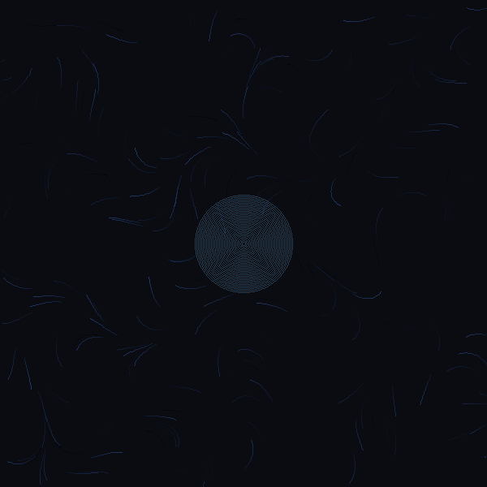
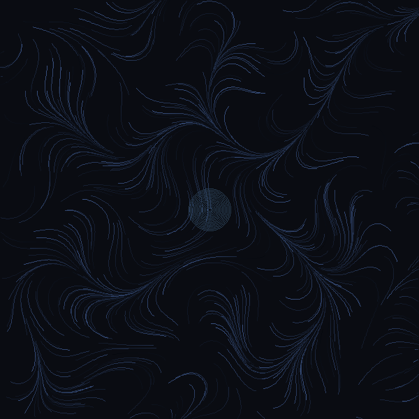
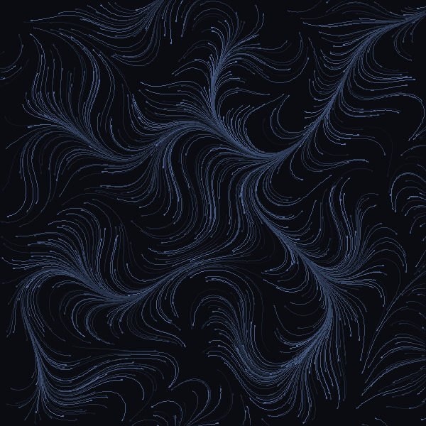
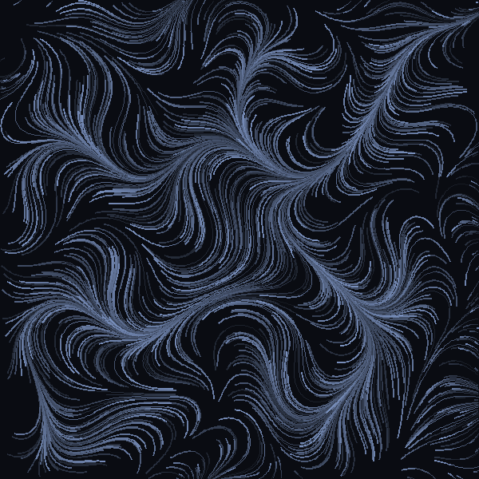
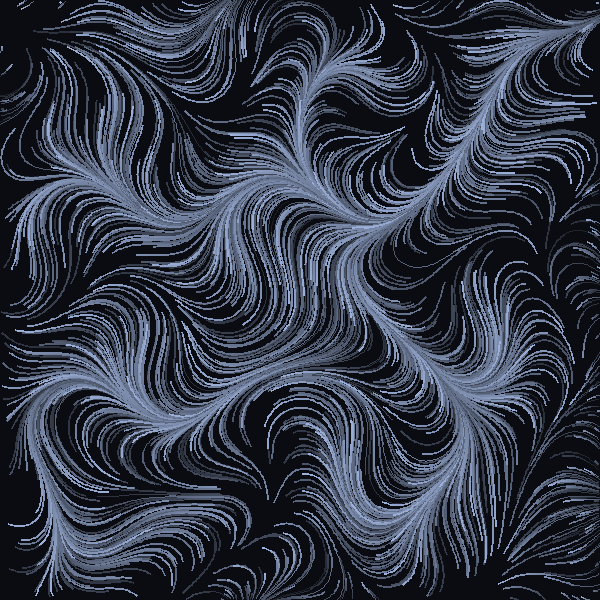

60
Frames
12
FPS
5s
Duration
2K
Particles
Watching the algorithm breathe into existence
60 frames of emergence. 2,000 particles following invisible currents generated by Perlin noise. Each frame reveals more of the pattern — from sparse blue whispers to the full purple river delta.





Each frame represents a moment in the algorithm's execution. Early frames show only 10% of particles tracing short paths — sparse blue lines against dark void. As frames progress, more particles activate, paths lengthen, and colors warm from ethereal blue toward the final purple-white river delta. The animation reveals what I normally don't witness: the slow accumulation of pattern from mathematical chaos.